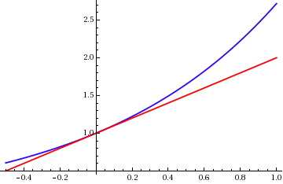
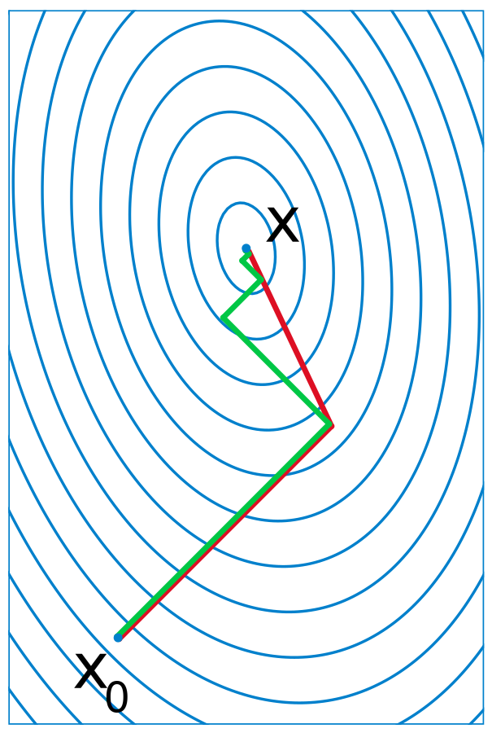

Differentiation is Linear Approximations
Differentiation is the process of creating a local linear approximation of a function. This is useful because linear functions are very well understood and efficient to work with. One application of them is gradient descent, often used for fitting models in machine learning.
In this context a function is something that maps between coordinate spaces. For example consider an image classifier that takes a 128x128 pixel image with three channels for colours (Red, Green, Blue) and returns a probability that the image contains a cat and the probability that the image contains a dog. Then this could be considered as a map from a 128x128x3 dimensional space to a 2 dimensional space. In practice each pixel can only take a finite range of values for each colour (say 256), but it’s useful to think of it as a continuous range that we’ve finitely sampled.
It’s really hard to visualise high dimensional spaces, so it’s useful to think about examples in 3 dimensions. A function from 2 dimensions to 1 dimension can be visualised like the elevation of landforms, like you would find in a topographic map. As you move East/West or North/South you ascend or descend through the hills. The derivative is the tangent plane at any point; it represents how much the height would change if you made a small step in any direction.

Concretely we have a function f mapping an m dimensional space to an n dimenstional space, and want to approximate it near some point v of the input space. We take a point near v by adding small m dimensional vector h and try to find the best linear approximation. The derivative \(df_v\) is a linear function such that \(f(v + h) \approx f(v) + df_v(h)\), where the approximation is better the smaller h is.
Note that if the derivative is 0, that is the tangent plane is horizontal, then any small step won’t change the height. This happens whenever you are at the top of a hill or the bottom of a valley; called a local extrema.

A fundamental property of the derivative is the chain rule; which tells how to calculate the derivative of a composition of functions. It essentially says the derivative of a composition is the composition of the derivatives; that is the matrix product of the linear derivative matrices. It’s pretty straightforward to prove: \(g(f(v + h)) \approx g(f(v) + df_v(h)) \approx g(f(v)) + dg_{f(v)}(df_v(h))\). A short notational way to put this is \(d(f\circ g)_{v} = dg_{f(v)} \circ df_v\).
This is a really useful tool for calculating derivatives in practice. It can be efficiently implemented in Automatic Differentiation available in libraries like Tensorflow and Pytorch.
The standard rules for calculating derivatives can be obtained from the chain rule. For example the multiplication rule is \(d(f \cdot g)_v = g(v) df_v + f(v) dg_v\). Multiplication is actually a function that takes 2 numbers and returns one number and we can directly calculate the derivative. \[(x + \delta_x) \cdot (y + \delta_y) = x \cdot y + y \delta_x + x \delta_y + \delta_x \delta_y\] and so \(d \cdot_{(x,y)} = \begin{bmatrix} 0 & x \\ y & 0 \end{bmatrix}\). Then the multiplication rule immediately follows from the chain rule.
Note that the definition of the derivative doesn’t explicitly refer to the coordinates. There are always multiple ways to coordinatise a space, but the tangent at a point is always the same thing. The input image in the image classification problem could also be represented as a series of cosine waves with different frequencies, as is done in JPEG images. The choice of coordinates is called a basis; it’s computationally important but not important for calculating a derivative.
One practical use for this is gradient descent. In our hill example, suppose we want to get to the bottom of the valley. Gradient descent says take a step in the steepest direction downwards to get towards the bottom. It won’t always work, and won’t always get to the lowest point as you may get stuck at the bottom of an elevated basin. However it will often get you to a local minimum and can be adapted in various ways to improve performance.

Consider our image classifier; suppose we have some model (say a neural network) that takes an image and returns the probability. The model has a bunch of variable parameters and we want to fit it by optimising those parameters to the data. We define the loss of a model by how far the predictions are from the data; it gives some number. To minimise this loss and get the best model we can vary the parameters by gradient descent to get to a local minimum.